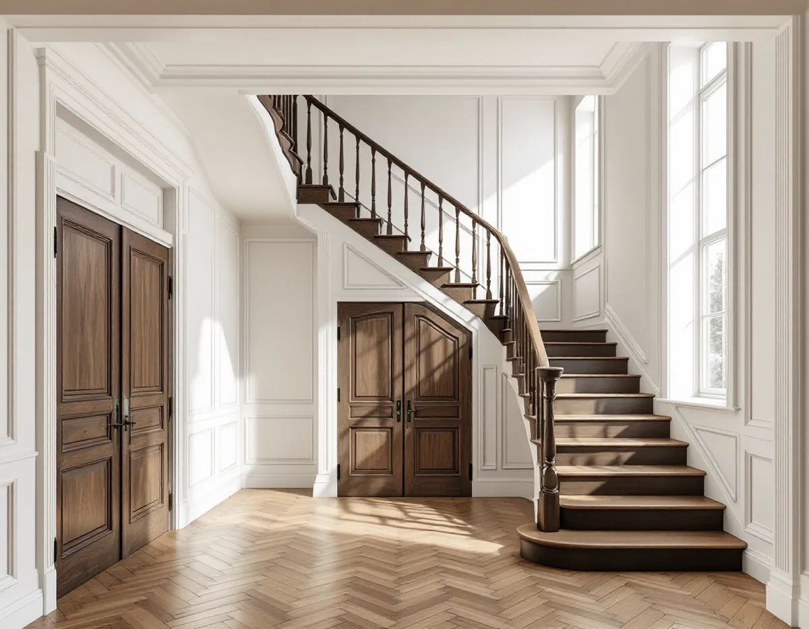
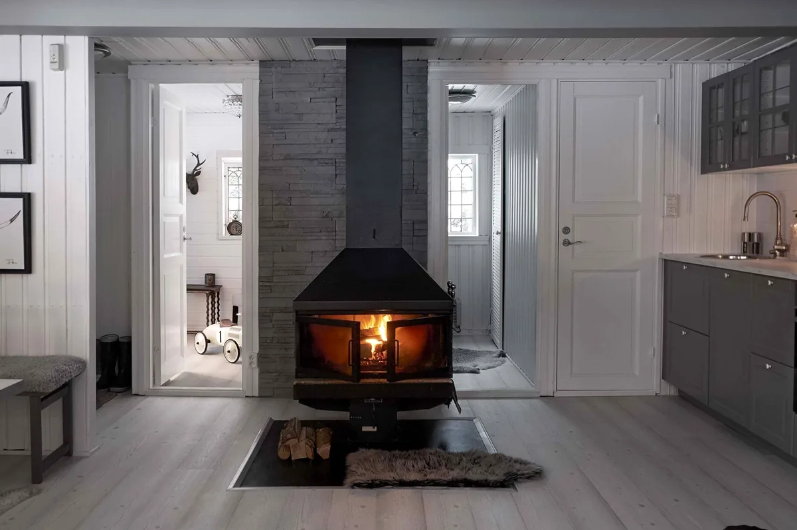

Platsbesök
Vi går igenom huset och noterar vad som ska bevaras, renoveras eller rivas.
En totalrenovering börjar ofta med rivning, och i en äldre villa är det där mycket av husets värde kan gå förlorat eller räddas. Geal Entreprenad AB tar totalrenoveringar av villor i Danderyd som en total entreprenad och planerar rivningen lika noga som det som ska byggas nytt.

Kommunens översiktsplan beskriver att Danderyd sedan 1987 har två större områden av riksintresse för kulturmiljövården: Djursholms villastad och Stocksunds villastad. Djursholm kallas landets första som förort anlagda villastad, och bebyggelsen speglar framför allt perioden 1890–1930, med stilideal som kan följas från de första enkla trävillorna till nationalromantik, jugend och funktionalism.
Kommunens riktlinjer för kulturhistoriska byggnader och miljöer från 2024 vänder sig till dig som äger en fastighet. Där uppmanas du att söka på din adress i Kulturmiljökartan i kommunens kulturmiljöhandbok och att ta tidig kontakt med kommunen för rådgivning om du planerar ändringar på eller inom din fastighet. Riktlinjerna påminner också om att åtgärder ska utföras varsamt även om fastigheten inte har något utpekat skydd, och att du som ägare är skyldig att hålla byggnaderna i vårdat skick.

Naturvårdsverket skriver att rivning ska ske planerat, kunnigt och varsamt, och att en materialinventering bör göras före bygg- och rivningsåtgärder. Vid inventeringen identifieras byggprodukter som kan återanvändas och vilket avfall som kan uppstå, inklusive farliga ämnen. Det är byggherren, alltså du som beställer arbetet, som har det yttersta ansvaret för avfallshanteringen.
Boverket påminner om att asbest förbjöds i byggsektorn 1982 men att stora mängder finns kvar i byggnaderna. Asbest kan sitta i bland annat kakel- och klinkerfix, golvmattor och lim, rörisolering, fönsterkitt och puts, ibland dold bakom andra ytskikt. I regel krävs att ett prov analyseras i mikroskop för att veta om materialet innehåller asbest. Företag som river och sanerar asbest måste ha tillstånd från Arbetsmiljöverket, och hittas asbest anlitar vi ett sådant företag för saneringen.
Enligt avfallsförordningen, som Naturvårdsverket redogör för, ska den som producerar bygg- och rivningsavfall sortera ut trä, mineral, metall, glas, plast och gips och hålla dem åtskilda. Sorteringen ska ske där avfallet uppkommer, alltså vid huset. Farligt avfall ska hållas skilt från annat avfall, förvaras väderskyddat och så att ingen utomstående kommer åt det.
Naturvårdsverket nämner också att tegel och konstruktionsvirke kan sparas vid ombyggnad, liksom dörrar, fönsterkarmar, beslag och sanitetsgods. I praktiken innebär det att vi monterar ned sådant som ska användas igen i stället för att bryta loss det, märker delarna och förvarar dem torrt tills de sätts tillbaka.
Kommunens riktlinjer lyfter fram äldre byggnadsdetaljer som fönster och dörrar. De har generellt ett högt kulturhistoriskt värde, håller ofta hög kvalitet och kan med fördel renoveras i stället för att bytas ut. Riktlinjerna noterar också att byggnader med höga kulturhistoriska värden och välbevarade byggnadsdetaljer ofta kan höja fastighetens ekonomiska värde.
Vid en totalrenovering är det lätt att allt gammalt hamnar i containern. Vi föreslår i stället att fönster och innerdörrar bedöms var för sig, och att de som går att rädda renoveras medan resten av huset byggs om. Om fönstren finns mer under fönsterrenovering i Danderyd. Kök och badrum beskrivs under köksrenovering i Danderyd och badrumsrenovering i Danderyd, och tillbyggnad och tomt under byggföretag i Danderyd.
Vi går igenom huset och noterar vad som ska bevaras, renoveras eller rivas.
Material som kan vara farliga provtas, och delar för återbruk märks upp.
Rivning, sanering, återbruk och nybyggnad redovisas som egna poster.
Det som ska användas igen monteras ned, och avfallet sorteras vid huset.
Stomme, installationer, rum och ytskikt i tur och ordning – el och VVS via behöriga.
Vi går igenom huset med dig och visar vad som har bevarats.
Enligt Skatteverket kan rotavdrag ges för att sanera asbest i samband med byggarbete, men inte för att mäta asbest. Byggstädning av grovsopor och material efter ett rotarbete räknas däremot som rotarbete.
Företaget får dra av högst 30 procent av arbetskostnaden på fakturan. Rotavdraget är högst 50 000 kr per person och år och högst 75 000 kr tillsammans med rutavdrag. Material och resor ger inget avdrag. Geal drar avdraget direkt på fakturan.
Mängden som ska rivas, om material behöver provtas eller saneras, hur mycket som ska återbrukas och omfattningen av själva ombyggnaden påverkar mest. Efter ett gratis platsbesök får du ett skriftligt kostnadsförslag.
Renovera hela huset eller lägenheten.
Villarenovering →Takbyte, takbesiktning och plåtarbeten.
Takläggare i Danderyd →Djursholm, Stocksund och Enebyberg.
Takrenovering i Danderyd →Villastäder, lovplikt och strandskydd.
Attefallshus i Danderyd →Tillbyggnad, tomt och kommunens riktlinjer.
Byggföretag i Danderyd →Kalkfärg på puts, linoljefärg på trä.
Fasadmålning i Danderyd →Villastäder, egnahem och grupphus i Danderyd.
Fasadrenovering i Danderyd →Lovplikt, klassning och spröjs i Danderyd.
Fönsterbyte i Danderyd →Varsamt underhåll av villafönster i Djursholm.
Fönsterrenovering i Danderyd →Originalgolv i villor från 1890-talet och framåt.
Golvläggare i Danderyd →Slipa parkett och mönstergolv i villan.
Golvslipning i Danderyd →Rännor, stuprör och beslag i Danderyd.
Plåtslagare i Danderyd →Villastaden, takmaterial och solceller.
Takbyte i Danderyd →Tapet och papptak i äldre villor.
Tapetsering i Danderyd →Funkis, grupphus och 1950-talsvillor.
Tillbyggnad i Danderyd →Villastäder, ritningar och ventilation.
Badrumsrenovering i Danderyd →Villastäder, egnahem och kommunens regler.
Köksrenovering i Danderyd →Villor, egnahem och grupphus i Danderyd.
Målare i Danderyd →Altaner, staket och carport.
Snickare i Danderyd →